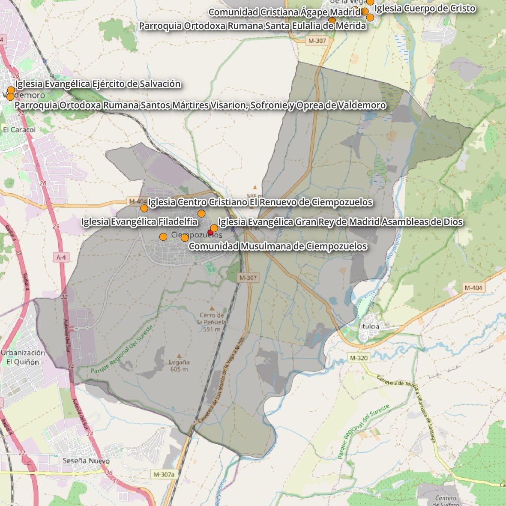
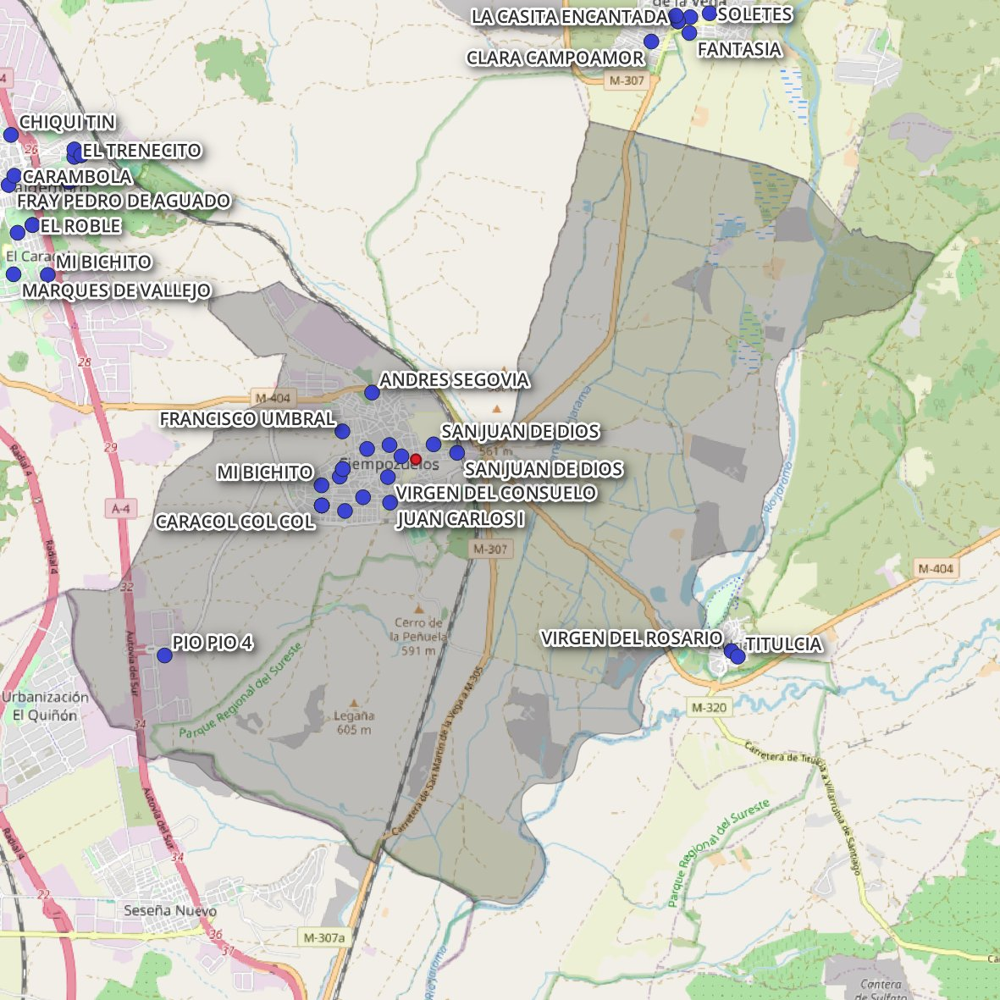

Puntos de interés en el territorio parroquial
Parroquia Santa María Magdalena (Ciempozuelos) · Arciprestazgo de Valdemoro
Entidades religiosas no católicas

5 entidades religiosas no católicas en el territorio de la parroquia.
Evangélicos (3)
- Iglesia Centro Cristiano El Renuevo de CiempozuelosCarretera M-404, Polígono Dos Torres Km 30 Nave A, Ciempozuelos
- Iglesia Evangélica FiladelfiaCalle Beatriz Galindo 13, Ciempozuelos
- Iglesia Evangélica Gran Rey de Madrid Asambleas de DiosPlaza Mayor 9, Ciempozuelos
Musulmanes (1)
- Comunidad Musulmana de CiempozuelosCalle Pintor Goya 6 Local D, Ciempozuelos
Testigos de Jehová (1)
- Salón del Reino de los Testigos Cristianos de JehováCalle Camino de los Cestos 35, Ciempozuelos
Fuente: Registro de Entidades Religiosas del Ministerio de la Presidencia, Justicia y Relaciones con las Cortes. Situación en el mapa: dirección geocodificada con CartoCiudad (IGN) o Nominatim (OpenStreetMap).
Centros educativos

14 centros educativos en el territorio de la parroquia (público: 8, privado: 4, privado concertado: 2).
| Centro | Tipo | Titularidad | Domicilio | Web |
|---|---|---|---|---|
| ANDRES SEGOVIA | Colegio de educación infantil y primaria | Público | Calle de Jerónimo del Moral, 104, 28350 Ciempozuelos | Página web |
| ARCO IRIS | Centro privado de educación infantil | Privado concertado | Calle Castilla la Vieja, 2, 28350 Ciempozuelos | |
| BLANCAS Y NEGRAS | Centro autorizado elemental de música | Privado | Avenida de la Venerable Madre María Antonia de la Mis, 5, 28350 Ciempozuelos | Página web |
| CARACOL COL COL | Escuela infantil | Público | Calle Tablas de Daimiel, s/n, 28350 Ciempozuelos | Página web |
| CIEMPOZUELOS | Escuela municipal de música y danza | Público | Calle Mayor, 1, 28350 Ciempozuelos | Página web |
| COLORINES | Escuela infantil privada | Privado | Calle del Prado Redondo, 48, 28350 Ciempozuelos | |
| ELOY SAAVEDRA | Colegio de educación infantil y primaria | Público | Calle Timanfaya, 1, 28350 Ciempozuelos | Página web |
| FRANCISCO UMBRAL | Instituto de educación secundaria | Público | Avenida de la Hispanidad, s/n, 28350 Ciempozuelos | Página web |
| JUAN CARLOS I | Instituto de educación secundaria | Público | Calle de San Francisco, s/n, 28350 Ciempozuelos | Página web |
| MI BICHITO | Centro privado de educación infantil | Privado | Avenida Belén, 38, 28350 Ciempozuelos | |
| PIO PIO 4 | Escuela infantil privada | Privado | Polígono La Sendilla, sector S-18 a Este (N-IV, km 33), 28350 Ciempozuelos | Página web |
| SAN JUAN DE DIOS | Centro privado de formación profesional específica | Privado concertado | Avenida de San Juan de Dios, 1, 28350 Ciempozuelos | Página web |
| VENTURA RODRIGUEZ | Colegio de educación infantil y primaria | Público | Calle FERNANDEZ VITORIO, 12, 28350 Ciempozuelos | Página web |
| VIRGEN DEL CONSUELO | Colegio de educación infantil y primaria | Público | Calle de los Jardines, 10, 28350 Ciempozuelos | Página web |
Fuente: registro de centros educativos de la Comunidad de Madrid. Solo se recogen los centros de alta.